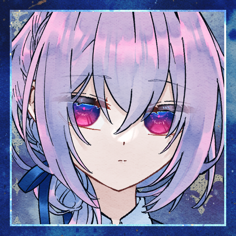
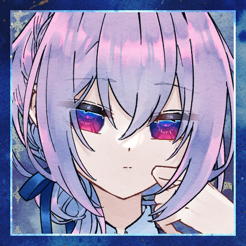
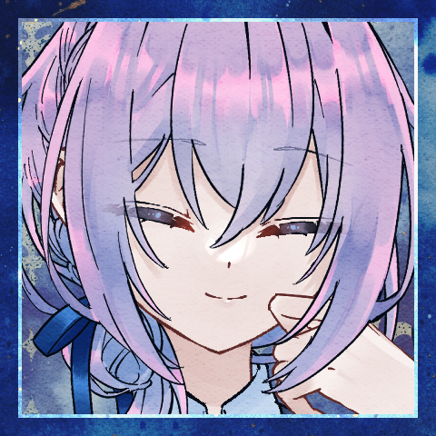

エール
「一人で行っちゃうなんて、興味なさそうに見えてなんかあったのかなあ」
茂みの中。クラレットと"赤い靴"の様子を窺いながらぽつりと。
センバ
「どうでしょう、なんか昨日はやたら緊張してる雰囲気はありました……」
センバ
「なんか荷物漁ってたんです。どうしたのかな～って話しかけたら緊張かもって」
エール
「荷物」うーん。また逆に首傾げ。
「まさか、赤い靴持ってたなんてはずないし……」ほんとにない。
センバ
「依頼のあの時は普通のローファーでしたよ」
センバ
「だから、本当に多淵さんなのか……いや、……それ言い出したら何でもありですね」
エール
「見た目だけが彼女を模している……とかなら」
エール
「そりゃあ、救いはある話だけれども」ごそごそ。茂みの中で体勢を変える。音を立てないようにしながら。
センバ
「不意にひょっこり戻ってきてくれないかなって思っちゃいます」
エール
「それで」睨むように赤い靴そのものを見ている。
エール
「三人よりかは、ましだろうけれど」同じことを考えていたらしい。息をつく。
エール
「三人で覚悟を決める必要は、ありそうだ」靴の語る言葉を聞いている。
センバ
「多淵さんが戻ってこない最悪は想定しないとですね」
エール
「寸止めなんてする余裕は、残らないだろうからね……」
エール
考えている。
自分が迂闊に興味を示さずに、きっぱりと依頼を拒んでいたら。
公爵家の依頼人に背を向けていれば。
センバ
「……ただ、いずれにせよ。時間の問題だったと思います」
エール
「…………ん」
クラレットと赤い靴の方からは、今は目を逸らさない。
エール
クラレットは、まだ大丈夫。のはずだ。
あれは彼女が”踏み込む”ための所作。疵に触れるための手順。
分かっていても肝は冷える。
センバ
視線は逸らさない。未だ攻撃は届かない。彼女の実力は知っている。
エール
同じくらいに彼女の脆さも知っている。
パーティの中で最も打たれ弱い彼女。
頼もしさと裏腹の、事実としての脆弱さ。
センバ
何度も場を潜り抜けて来た。だから信じている。今は。
エール
信じている。信じているからってなんだ。
信じて、任せて、盲目になって。
その末失ったものがあったくせ？
センバ
「……戻って来るって、信じたい所ではありますね。それでクラレさんが居なくなるのは嫌ですけど」
エール
戦力的には、クラレットが抜けているよりも、ラサが抜けている状態の方が。
自分たちはバランスがいい。
エール
そう思ったことを、口に出すか迷って、出さない方の判断を下す。
エール
そんな、毒にも薬にもならない夢物語だけ吐いて。
センバ
「……俺は誰も死なないで普通に終わって欲しいですよ」
エール
賢しらな少女の、仲間を想う言葉を聞いている。
エール
確かに少女の命を刈り取るだろう暴力を前に、衝動を抑えて膝をつく。
センバ
まだここから出て行くべきではない、と判断している。
エール
仲間を見殺しにする可能性を看過して。
仲間の見出す勝機に希望を託しながら。
エール
クラレットをいつでも守れる位置取りを保ちながら、
そういうこと言うよなあ、というようなことを考えている。
エール
センバのこの手の言動には、ラサよりもヒヤッとさせられる瞬間がある。

クラレット
センバは、いつもあの調子だ。
気が狂っているほどにあの調子なのだ。
クラレット
やり合いが始まったと判断して、センバとラサの二人から距離を取る。
エール
その中間。
どちらに対しても援護が可能な立ち位置。
エール
時折救世主めいた策を考えたり、勘繰りを見せたりなどするが。
あくまでも後天的な振る舞い。未だに彼の中には根付いていない。
彼の本質と強みは、いつまでも揺るがぬ常識と、それを衒いなく振り翳せる独善にある。
エール
自分が意図的に為す思考停止を、彼は息をするようにやり遂げる。
クラレット
「あれで初心な態度を貫き続けているのも異常なのにね」
エール
彼の常識に自分たちは太刀打ちできない。
余計な口を挟む必要もない。
エール
そもこの凄絶な猟奇の交錯へ、生半可に割って入れるはずもないのだが。
エール
「だいぶ無理して勘繰ってたんだなって、思う」
エール
「まあ、あれはあれで、彼の常識だったのだろうけれども……」

クラレット
「まあ、あの時は……そうね、『あんなうまい話があるはずが』が彼の常識ってところかしら」
エール
「居心地は、悪そうだった――け、ど」身構える。
吹き飛ばされたセンバのさまを注視する。
クラレット
吹き飛ばされた、が、また立ち上がる。
流石にこの実力まで上り詰めただけある。
エール
じりじりと間合いを測るばかりのこの時間は苦手かもしれない。自分も。
お茶会のたびに、そんなことを思っている。
エール
「……常識があって、良心がある。
かれの中の常識は、どうにも……ずいぶんと」
クラレット
「元は平和な世界から来ているんでしょうね」
クラレット
「それでここまで適応できるのって、どうなのかしら」
クラレット
「元からか、堕落の国のせいかはともかくとして」
エール
「ラサが戻ってくることを、望めるくらいだからね」
クラレット
「あたしもけっこう、ラサが戻ってくるのを期待しているのだけれど」

クラレット
「じゃあ、三人そろって仲良く筋金入りね」
エール
約束をしようか、と言いたかった。
ラサを取り戻すために全力を、最善を尽くそうか、なんて。
エール
でも、多分、自分にはその約束ができないから。
エール
だからこうして、当たり障りのない言葉を返すことしかできなかった。
センバ
遠回りで走っていく。木の端を飛び越えて、枝を飛び越える。